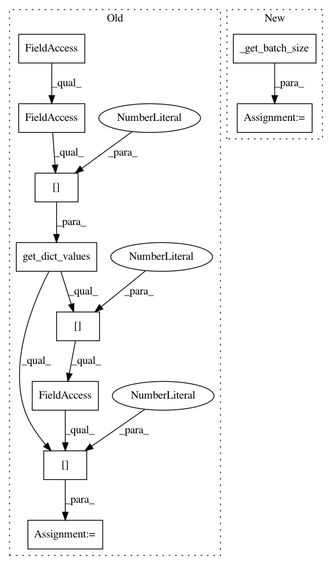

45770920b92d81ab27e03a3305fe8e776427d111,pixyz/losses/adversarial_loss.py,AdversarialKullbackLeibler,_get_estimated_value,#AdversarialKullbackLeibler#Any#Any#,161
Before Change
self._q.prob_text)
def _get_estimated_value(self, x, discriminator=False, **kwargs):
batch_size = get_dict_values(x, self._p.input_var[0])[0].shape[0]
// sample x_p from p
x_p_dict = get_dict_values(self._p.sample(x, batch_size=batch_size), self.d.input_var, True)
After Change
self._q.prob_text)
def _get_estimated_value(self, x, discriminator=False, **kwargs):
batch_size = self._get_batch_size(x)
// sample x_p from p
x_p_dict = get_dict_values(self._p.sample(x, batch_size=batch_size), self.d.input_var, True)
In pattern: SUPERPATTERN
Frequency: 3
Non-data size: 10
Instances
Project Name: masa-su/pixyz
Commit Name: 45770920b92d81ab27e03a3305fe8e776427d111
Time: 2019-03-14
Author: masa@weblab.t.u-tokyo.ac.jp
File Name: pixyz/losses/adversarial_loss.py
Class Name: AdversarialKullbackLeibler
Method Name: _get_estimated_value
Project Name: masa-su/pixyz
Commit Name: 45770920b92d81ab27e03a3305fe8e776427d111
Time: 2019-03-14
Author: masa@weblab.t.u-tokyo.ac.jp
File Name: pixyz/losses/adversarial_loss.py
Class Name: AdversarialJensenShannon
Method Name: _get_estimated_value
Project Name: masa-su/pixyz
Commit Name: 46cb2800632916cd005a974f72c648a4524c08c2
Time: 2019-03-18
Author: masa@weblab.t.u-tokyo.ac.jp
File Name: pixyz/losses/mmd.py
Class Name: MMD
Method Name: _get_estimated_value